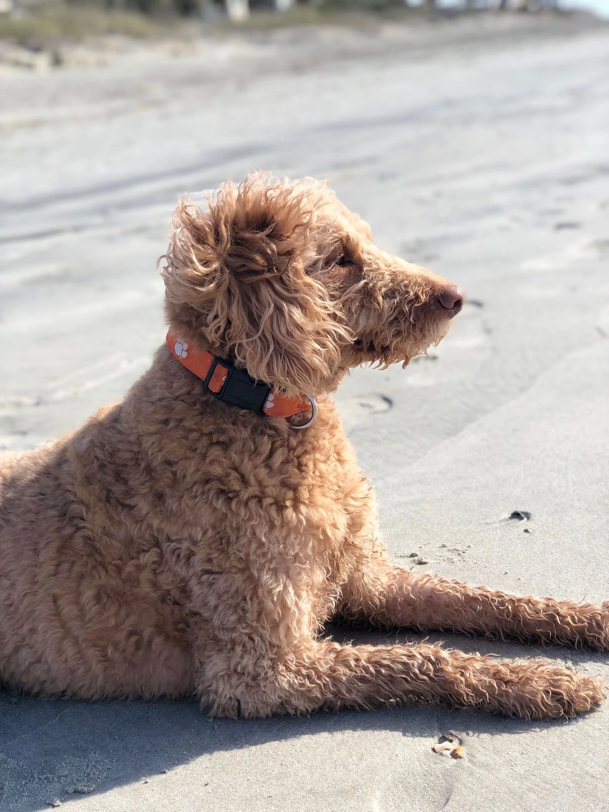

Therapy for anxiety, OCD, eating disorders and athletes in South Carolina and North Carolina
You look like you have it all together.
Underneath, you're exhausted from trying to meet impossible standards.
Therapy for teens, adults and athletes who are successful on the outside and worn down on the inside. Online, anywhere in South Carolina or North Carolina.
Samantha McKenzie, LISW-CP, LCSW. Based in the Charleston area.
Who we see
Four kinds of people who rarely ask for help.
Most of our clients are the dependable one, the strong one, the one who gets it done. They come in when the cost of holding it together gets too high.
Working with kids, teens and parentsAthletes and performers
Pre-competition anxiety, the self-criticism that never shuts off, identity that collapses outside the sport, and the fear of letting the team down.
OCD and intrusive thoughts
Thoughts you cannot ignore and rituals that quiet them for an hour. Exposure and Response Prevention, the treatment with the strongest evidence for OCD.
Eating disorders and body image
Counting, weighing, bingeing, purging, compulsive exercise, or the quiet rule that tomorrow will be the day it gets better.
Anxiety, perfectionism and burnout
Second-guessing, worrying what people think, social avoidance, and an inner critic you have never been able to argue with. Teens and adults.
Can you relate?
Check the ones that sound familiar.
Nobody sees this but you. It is here to help you decide whether a conversation is worth fifteen minutes.

About Samantha
Many of the behaviors you're struggling with once helped you get through something.
"If they were easy to stop, you would have done that already. My job is to help you understand the how and the why behind your patterns, with curiosity instead of judgment, and then to move at a pace that feels manageable."
LCSW, North Carolina (C018085)
Our approach
Evidence-based, and built around the relationship.
Research puts a large share of a client's outcome on the relationship with their therapist, so we start there. Then we use the treatments with the best evidence for your specific problem, not a general-purpose talk.
Exposure and Response Prevention
The gold-standard treatment for OCD. You face the thoughts, images and situations that set off the anxiety, on purpose and in order, and practice not doing the ritual that usually follows. The thoughts lose their grip because you stop feeding them.
Structured, measurable, and over when it works, not open-ended.
Cognitive Behavioral Therapy
How your thoughts, feelings and actions feed each other. We find the thinking patterns that keep you stuck (the catastrophe, the mind-reading, the all-or-nothing scoreboard) and practice replacing them with ones that hold up.
Acceptance and Commitment Therapy
Instead of fighting every uncomfortable thought, you learn to let it be there and act on what matters to you anyway. The goal is flexibility: a life guided by your values rather than by fear or the inner critic.
SPACE for parents
Supportive Parenting for Anxious Childhood Emotions. When a child is anxious, the whole family starts accommodating it. SPACE teaches parents what to change at home so the child's anxiety has less room to grow, without the child having to sit in a therapist's office.
Insurance
- South CarolinaAetna, Cigna, UHC
- North CarolinaAetna, BCBS of NC, Cigna, Quest, UHC
Self-pay
- Initial intake evaluation$160
- Individual session$150
- 15 minute consultFree
Where
- South CarolinaCharleston, Greenville, Columbia
- North CarolinaAsheville, Charlotte, Raleigh
- FormatSecure video only

"Therapy isn't always easy, and sometimes it can get a little messy. On the other side is a life guided by who you are, not by fear, self-criticism, or impossible standards."
Samantha McKenzie
About the mark
Why marsh grass.
Spartina grows where almost nothing else can, in salt water that floods it twice a day. Storms lay it flat. Winter turns it gold and brittle. Down in the mud, its roots keep their grip, and every spring it comes back green.
From the Outer Banks to the Lowcountry, that grass is what holds the Carolina coast together. It's also a good picture of what this work is for: bending under a lot, holding on where no one can see, and growing back.
Read about SamanthaFirst step
Fifteen minutes. No commitment.
Reaching out is the uncomfortable part. On the call we talk about what's going on, whether we're the right fit, and what the first few sessions would look like.
- Reach out by form, text or call.
- Free 15 minute call within a business day or two.
- Intake session on secure video, usually within the week.